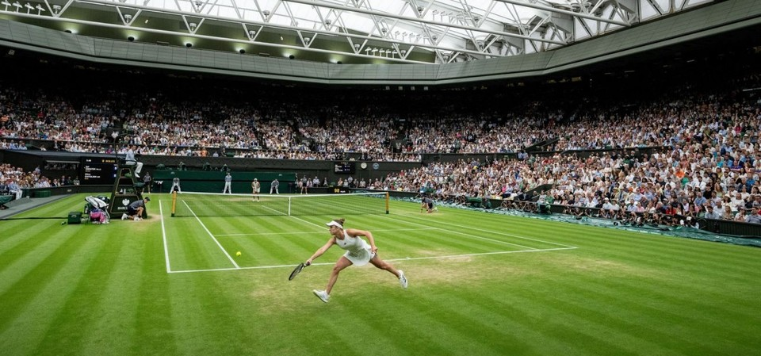

Plan. Play.
Repeat.
테니스 일정을 달력으로 한눈에 확인하고, 회원·게스트와 함께 선착순으로 참여하세요.
--
모집중
마감
대참 구함 / 선택

OPEN
올림픽공원 테니스장
- 위치
- 서울 송파구
- 레벨
- NTRP 2.0 ~ 3.0 (참고용)
- 인원
- 4명 (회원 3 + 게스트 1)
- 금액
- 대관료 + 캔볼비 → 1인당 자동 계산
- 주차
- 가능
테니스 일정을 달력으로 한눈에 확인하고, 회원·게스트와 함께 선착순으로 참여하세요.

시작한 지 얼마 안 된 동호인도 지인들과 칠 일정을 쉽게 찾고 만들 수 있어요.
월 / 주 / 일 단위로 전환하며 일정 확인
시작~종료 날짜·시간을 선택해 시간별 데이터 등록
회원 또는 게스트로 선착순 즉시 참여
내정보와 전체관리로 가입 회원 확인
테니스를 시작한 지 얼마 안됐는데 지인들과 치기 위해 일정을 확인해야 하는 동호인 모두 환영
언제 어느 때든 PC나 모바일로 테니스 일정 확인을 위해 사이트 방문해보세요
개인의 일정을 설정해 사람을 구하거나, 다른 사람의 일정에 참여해보세요
가입부터 대참자 구하기까지, 이용 방법을 안내해요.
선착순 즉시 확정 (승인 절차 없음)
참여자가 있으면 메모·금액·위치만 수정 가능. 시간·날짜·정원은 수정 불가, 삭제는 운영자가 처리.
날짜·시간, 테니스장, 위치, 주차여부, 인원수, 레벨, 예약자, 금액(대관료·캔볼비). 메모만 선택.
대관료와 캔볼비를 합산해 회원+게스트 총 인원 기준 1인당 금액을 자동 계산.
달력에 남고 상세 열람 가능. 참여·취소·대참 버튼은 비활성화하고 “종료된 일정” 표시.
일정 등록자만 추가하며 정원과 1인당 금액 계산에 포함.